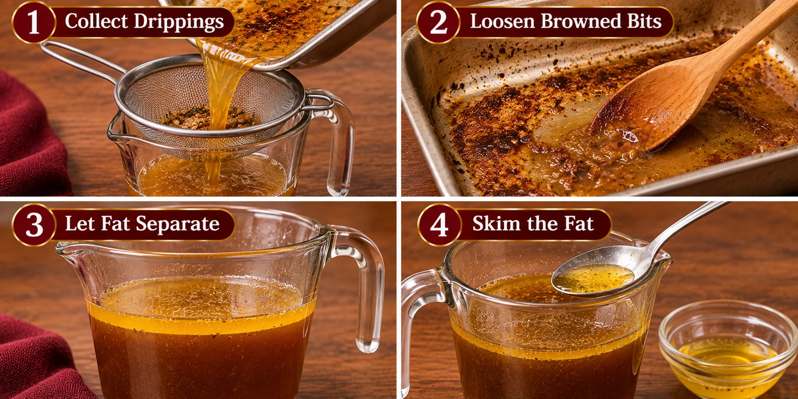
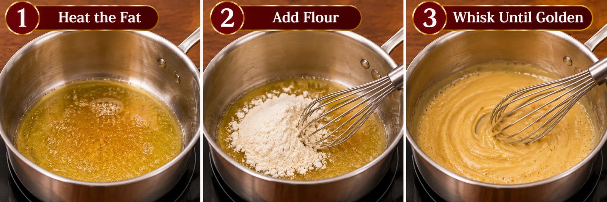
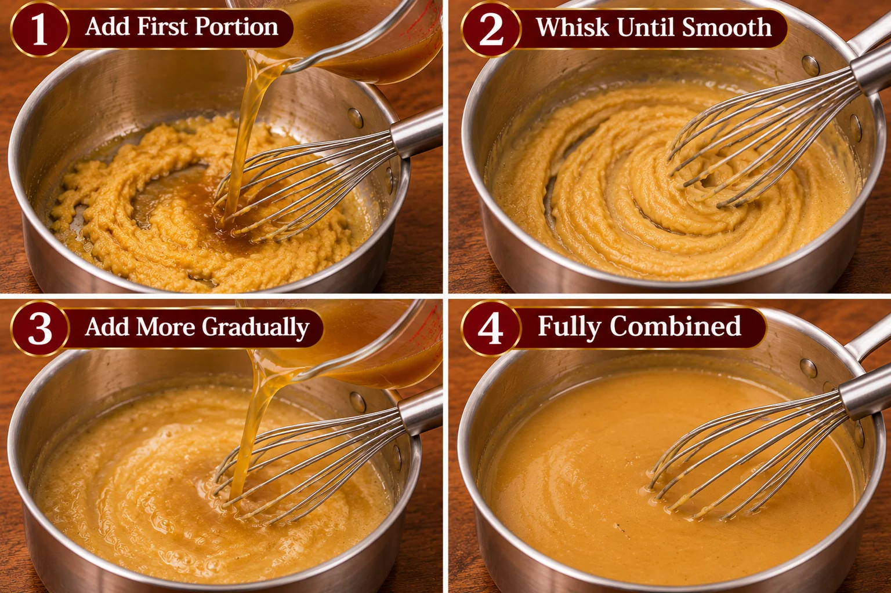
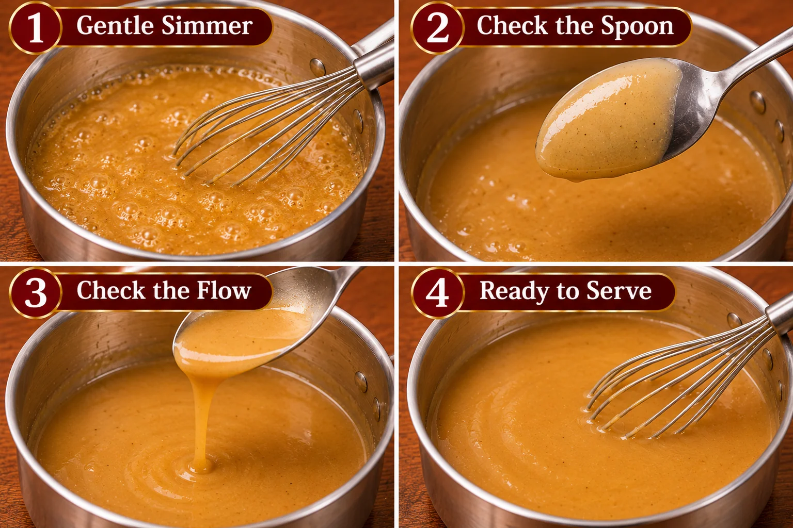
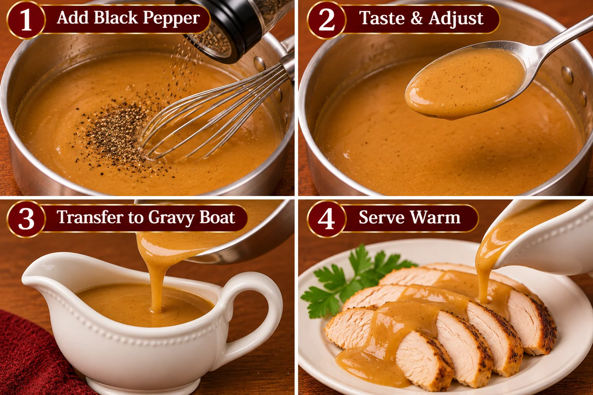

Easy Homemade Turkey Gravy
Rich, savory gravy with turkey drippings, or an easy broth-only option.
Difficulty: Beginner • Total time: 15–25 minutes
Equipment: Medium saucepan, whisk, measuring cups, spoon, heatproof measuring cup; fine-mesh strainer (optional).
Ingredients
| Ingredient | Amount |
|---|---|
| Unsalted butter or reserved turkey fat | 4 tablespoons total |
| All-purpose flour | ¼ cup |
| Low-sodium turkey or chicken broth | Enough to make 2 cups total liquid with pan juices |
| Turkey pan juices | As available, counted within the 2 cups |
| Black pepper | ¼ teaspoon, to taste |
| Salt | Only as needed, after tasting |
Before You Start and Equipment
Turkey drippings are the juices and melted fat collected in the roasting pan. After resting, fat rises to the top and flavorful juices settle below. This recipe uses up to 4 tablespoons of that fat plus the juices. No drippings? Butter and low-sodium broth work too.
Step-by-Step Instructions
1. Collect the Pan Juices
After transferring the cooked turkey to a cutting board, carefully strain the liquid from the roasting pan into a heatproof measuring cup. If flavorful brown bits remain stuck to the pan, add about ¼ cup of your measured broth, scrape them loose with a wooden spoon, and add that liquid to the cup. Avoid burnt black bits. Let the drippings stand a few minutes so the fat rises.
Small note: Loosening browned bits with liquid is called deglazing.
2. Measure Fat and Liquid
Spoon off up to 4 tablespoons of fat from the top of the drippings. If there is less, add enough unsalted butter to make 4 tablespoons total. Measure the juices left underneath, then add low-sodium broth until you have exactly 2 cups of combined liquid. Keep the fat and liquid in separate containers.
Make it your own: No turkey drippings? Use 4 tablespoons unsalted butter and 2 cups low-sodium turkey or chicken broth. Skip collecting and separating pan juices and begin with the roux.
Important: The 2 cups includes the turkey juices. Do not add 2 full cups of broth on top of the juices.

3. Cook the Flour and Fat
Heat the 4 tablespoons of turkey fat, butter, or a combination in a medium saucepan over medium-low heat. When the butter has melted, whisk in ¼ cup all-purpose flour. Continue whisking for about 2 minutes until the mixture is bubbly, smooth, and lightly golden. It should look like a thick paste.
Small note: A cooked mixture of flour and fat used to thicken gravy is called a roux. Reduce the heat if it darkens quickly or smells burnt.

4. Add the Liquid Gradually
Whisk about ¼ cup of the measured 2 cups of broth-and-juice mixture into the roux. It will look very thick at first. Whisk until smooth, then add another ¼ cup. Continue adding the remaining liquid gradually, whisking after each addition. Increase heat to medium and bring to a gentle simmer.
Adding the first portions slowly helps prevent lumps. If lumps remain, whisk vigorously or strain the finished gravy.

5. Simmer and Check Thickness
Simmer for about 3–5 minutes, whisking frequently, until the gravy lightly coats a spoon but still pours easily. It thickens a little more as it cools.
Too thick? Whisk in warm broth 1 tablespoon at a time. Too thin? Simmer another 2–3 minutes. If still thin, stir together 1 teaspoon cornstarch and 1 teaspoon cold water; whisk into simmering gravy and cook 1–2 minutes before deciding whether more is needed.

6. Season, Taste, and Serve
Stir in ¼ teaspoon black pepper. Taste before adding salt because drippings may already be salty. Add salt in small pinches only if needed. For extra flavor, add ½ teaspoon fresh thyme leaves OR ⅛ teaspoon dried thyme, ⅛ teaspoon garlic powder, or ½ teaspoon Worcestershire sauce, tasting as you go. Transfer to a gravy boat or small pitcher and serve warm.
Make it your own: Optional finishing flavors: stir in ½ teaspoon fresh thyme leaves (or ⅛ teaspoon dried thyme), ⅛ teaspoon garlic powder, or ½ teaspoon Worcestershire sauce, then taste again.

Troubleshooting
Lumps: Whisk thoroughly or strain through a fine-mesh strainer.
Too thick: Whisk in warm broth gradually.
Too thin: Simmer longer; use a small cornstarch-and-cold-water mixture if needed.
Floury flavor: Simmer a little longer while stirring.
Too salty: Dilute with unsalted broth; thicken again if necessary.
Greasy: Skim excess fat from the surface.
Not flavorful enough: Try thyme, garlic powder, or Worcestershire sauce in small amounts.
Make-Ahead, Holding, Storage, and Reheating
Hold covered at 140°F or above in a food-safe warmer, checking the gravy temperature with a food thermometer. Whisk occasionally. If you cannot maintain safe hot holding, refrigerate promptly and reheat before serving.
Refrigerate in shallow containers within 2 hours; keep at 40°F or below and use within 3–4 days. Reheat gravy in a saucepan, whisking, until it reaches a full rolling boil. Add a splash of broth if needed. Freeze in a freezer-safe container with space for expansion if storing longer.